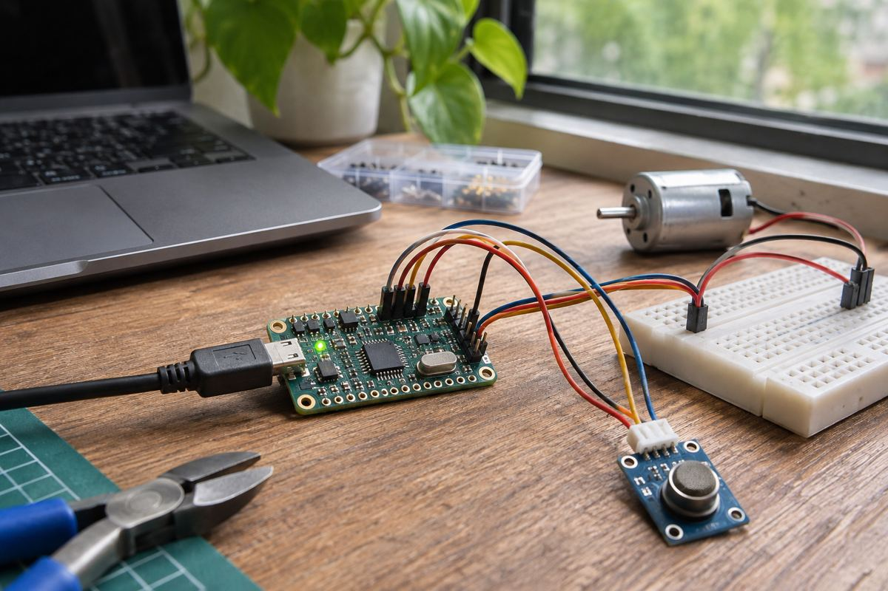

開発ボード / EXPLAINED
XIAO STM32C5登場 小型基板にCAN FDとセンサー加熱機能
Seeedが11月4日に紹介。通信と動作計測をまとめるが、2本目の物理CANバスには外付け部品が必要だ。

Seeed Studioは11月4日、STM32を初めて採用したXIAO開発ボードを紹介した。144MHzのArm Cortex-M33を備えるSTM32C5A3CGを中心に、CAN FD、6軸慣性センサー、その周囲の加熱抵抗を搭載する。公式発表は未はんだ付け版9.90米ドル、ピン実装版10.90米ドルで購入可能と案内した。ただし各国の在庫や配送日が同一という意味ではない。
Seeedは小型ボードやセンサー、接続機器を提供する企業だ。XIAOはプロジェクトに組み込む制御基板のシリーズで、完成ロボットや一般向けPCではない。コードを書き、外部機器につなぐ必要がある。今回の変化は、この小さなシリーズにSTM32の開発環境と通信・動作制御機能を持ち込んだことだ。
CAN FDでは制御機器やセンサーがメッセージを交換する。コントローラーはメッセージを処理し、トランシーバーが配線に合う電気信号へ変換する。制御器は2系統あるが、TI TCAN3403-Q1とCANH・CANL接点が用意されるのは1系統のみ。2系統目を物理バスとして使うには外付けトランシーバーが要る。
加熱も自動的な精度保証ではない。加速度計とジャイロは温度で値がずれる場合があり、抵抗をファームウェアで制御して予熱し、温度フィードバックで条件を管理する仕組みだ。補正の成果はコードと環境に依存し、発表だけから特定の誤差が保証されるとは言えない。
仕様は内部プログラムフラッシュ1MB、SRAM 256KB、外部フラッシュ16MB。外部容量はログや設定保存に使えるが、実行中の作業メモリーが同量増えるわけではない。USB-Cと充電機能も備える。携帯機器の稼働時間は電池、加熱、通信設定を含む設計次第になる。
編集部の分析では、小型ロボットで計測と制御を分担させたり、CAN機器の記録を集めたりする出発点になり得る。ただし購入と産業装置の安全性・信頼性検証は別だ。公式デモがあっても、あらゆるモーターとの互換性や完成品認証を意味しない。配線、電源、ソフトウェアを用途に合わせる必要がある。
公式案内はSTM32CubeIDE、Zephyrを使うPlatformIO、MicroPythonの資料を示す。機能別の対応は最新文書で確認したい。別途予告されたCAN FDアナライザーは別の開発項目で、同日に発売されたとは確認されていない。現在の基板でできることと、追加部品や将来の更新が必要なことを分けて判断したい。